SHRINE QUESTS
🏛 神庙挑战
全部 31 个隐藏神庙挑战 · 含地图坐标与完整开启攻略
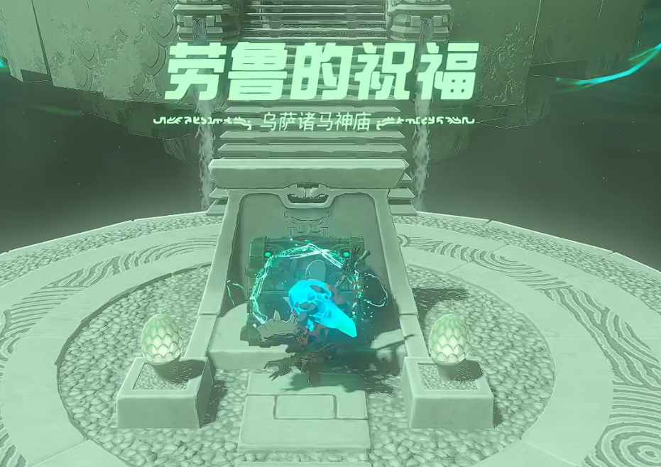
乌萨诸马神庙
📍 -2139, -0873, 0093
- 前往达利特森林（Dalite Forest）北端，找到地面上残破的神庙底座，接受挑战任务。
- 神庙底座发出光柱，指向西侧萨托利山（Mount Satori）山麓洞窟，洞口在神庙正西方山脚处。
- 进入洞窟后，深处有一只石巨人（Hinox），水晶挂在它的颈上——击败或绕过石巨人取得水晶。
- 使用究极手抱起水晶，原路运出洞窟，放置在神庙底座上即可激活，进入领取祝福之光。
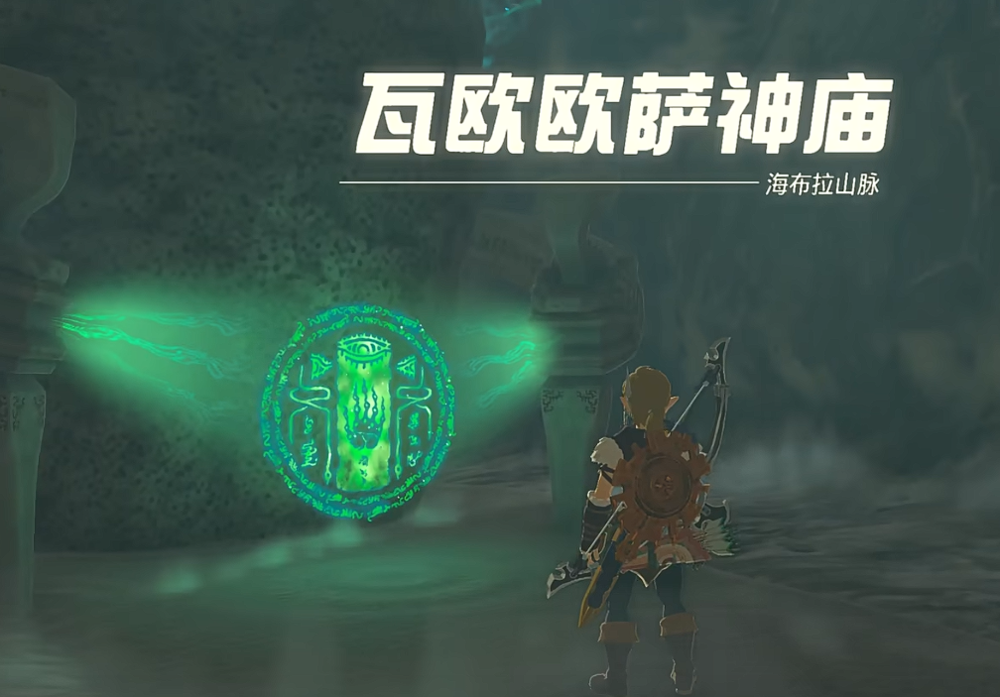
瓦欧欧萨神庙
📍 -4059, 1990, 0183
- 前往托托利湖（Totori Lake）西侧湖岸，找到一处白鸟形石雕，与其旁边的 NPC 对话接取任务。
- 白鸟目视方向指向西侧山壁上的洞窟入口——进入西托托利湖洞窟。
- 洞内需要跨越水面：使用余料建造将木板拼合成简易桥梁或竹筏通行，到达深处取得水晶。
- 将水晶带出洞窟，搬运至神庙底座放置即可激活神庙，完成后进入直接领取祝福之光。
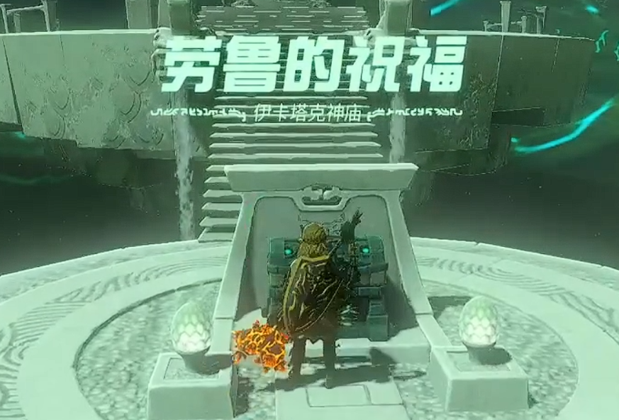
伊卡塔克神庙
📍 -3950, 1138, 0112
- 在吉萨环形山（Gisa Crater）西侧边缘找到残破神庙底座，接取挑战。
- 光柱指向环形山内部中央岩石洞穴——进入洞穴，水晶被岩石和碎石封锁在深处。
- 使用余料建造组合构造物推开大石块，或使用爆炸果清除障碍后抵达水晶。
- 用究极手抱起水晶，原路运出并放入神庙底座完成激活。
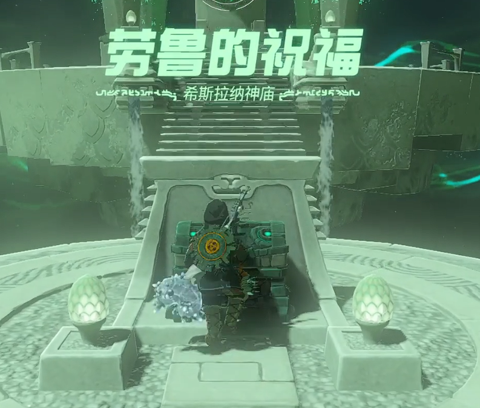
希斯拉纳神庙
📍 -2556, 3354, 0245
- 在皮基达石林（Pikida Stonegrove）视野塔东南方的雪地平原找到残破神庙底座，接取挑战。
- 光柱指向神庙北方雪坡高处——前往雪坡找到一块被冰封的水晶。
- 使用火焰武器、火把或炎热食材融化冰块解放水晶，再利用究极手将水晶沿坡运至神庙处。
- 将水晶放入底座激活神庙，进入领取祝福之光。
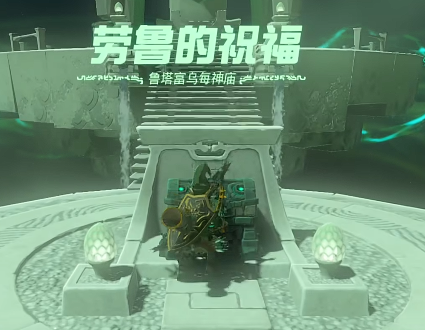
鲁塔富乌每神庙
📍 -2998, 3105, 0514
- 在海布拉山西北角找到残破神庙底座，光柱指向附近山壁上的洞窟入口。
- 进入洞窟后地面结冰，水晶在深处冰雪平台上——需跨越结冰水面前进。
- 使用余料建造拼接木板做成浮桥，或踩着冰块跳跃通行，抵达水晶处。
- 取得水晶后带出洞窟，放入神庙底座激活，进入领取祝福之光。
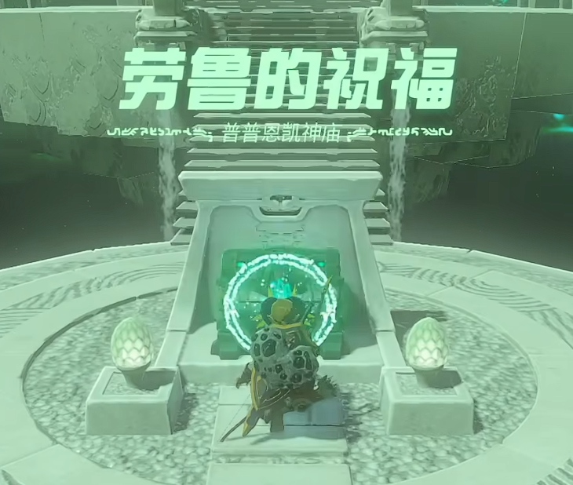
普普恩凯神庙
📍 0615, 2213, 0163
- 前往科洛克森林（Korok Forest）内部，找到在树干附近游荡的科洛克 NPC，与其对话接取挑战。
- 任务要求同时献上1 块矿石（普通矿石即可）和5 个金苹果放置在神庙底座前。
- 金苹果在科洛克森林内金色苹果树上采摘，矿石可在森林边缘敲击岩脉获取。
- 将两种物品同时放好后神庙显现，进入直接领取祝福之光（祝福神殿）。
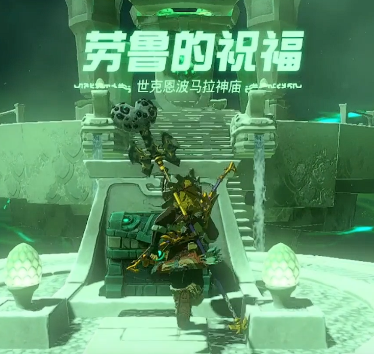
世克恩波马拉神庙
📍 0165, 2314, 0178
- 在科洛克森林深处找到被骷髅守卫把守的神庙入口，与守卫对话后触发挑战。
- 守卫声称禁止进入，实际上需要绕开守卫的视野，利用树木遮挡或隐身药剂接近神庙底座。
- 抵达神庙底座处后激活装置，神庙随即显现开启。
- 进入神庙直接领取祝福之光（祝福神殿）。
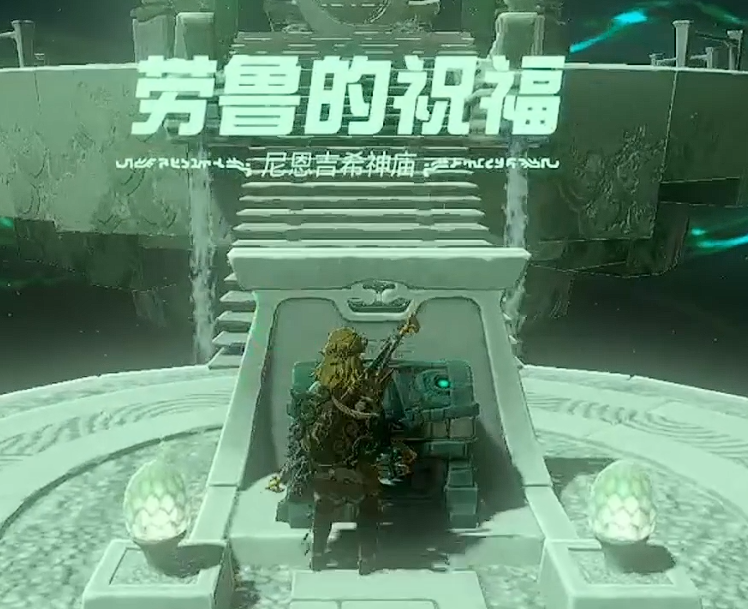
尼恩吉希神庙
📍 0353, 1891, 0178
- 在科洛克森林中找到科洛克 玛卡玛喀（Makami），与其对话获知它藏宝藏的线索。
- 根据玛卡玛喀指引，在森林内特定树丛或树根间找到隐藏的发光水晶。
- 使用究极手抱起水晶，将其搬运至神庙底座处放置激活。
- 进入神庙领取祝福之光（祝福神殿）。
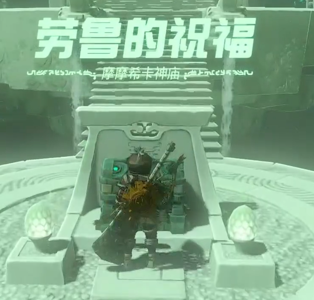
摩摩希卡神庙
📍 2959, 2758, 0524
- 前往死亡破火山口（Death Caldera），此区域极度高温，必须穿戴防火套装或饮用防热药剂。
- 在破火山口内侧边缘找到残破神庙底座，光柱指向火山口中央熔岩高台。
- 使用余料建造组合金属板搭建跨越熔岩的桥梁，抵达高台取得水晶。
- 携带水晶沿桥梁返回，放入神庙底座激活，进入领取祝福之光。
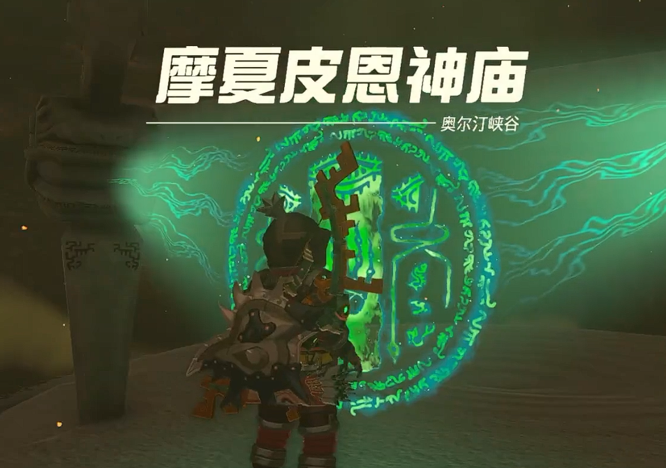
摩夏皮恩神庙
📍 2678, 1905, 0131
- 在因特诺奇湖（Lake Intenoch）北侧洞窟附近找到残破神庙底座，接取挑战。
- 进入洞窟后水晶漂浮在洞内水面中央——使用究极手直接从水中抓起水晶。
- 水晶体积较大，建议使用余料建造制作简单水上漂浮物运载水晶出洞。
- 将水晶带至神庙底座放置激活，进入领取祝福之光。
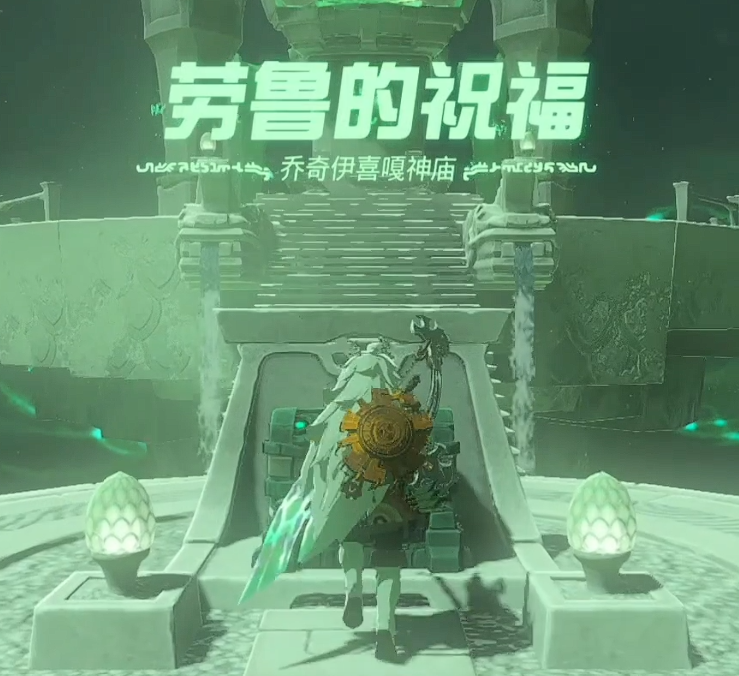
乔奇伊喜嘎神庙
📍 3809, 1219, 0090
- 在阿卡莱瀑布（Akkala Falls）附近找到 NPC 商人，与其对话了解他需要一块特定矿石来换取神庙开启线索。
- 前往附近岩脉采集亮石（Luminous Stone），带回交给商人。
- 商人收到矿石后满意，指引你前往附近的神庙底座位置，神庙随即激活显现。
- 进入神庙领取祝福之光（祝福神殿）。
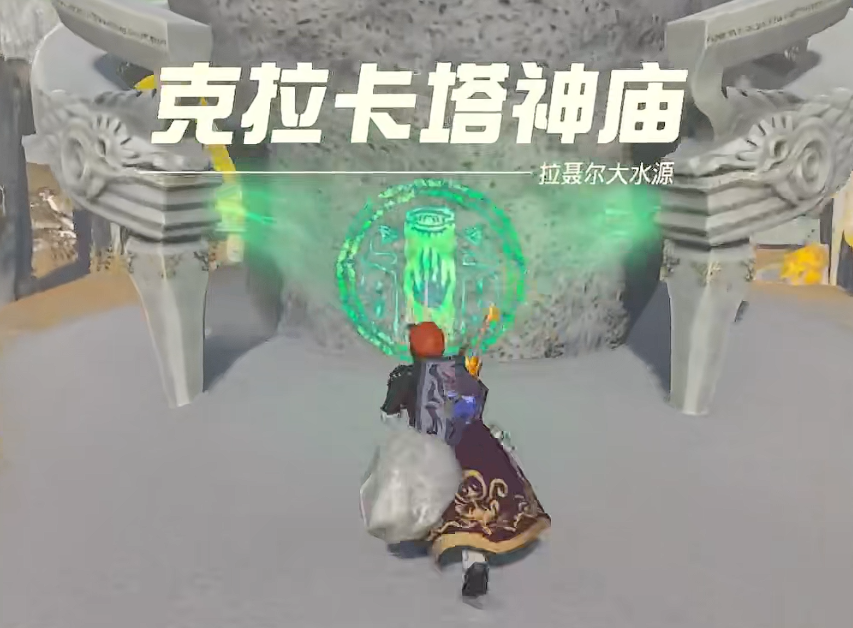
克拉卡塔神庙
📍 2362, -0511, 0156
- 在夸塔架台（Quatta's Shelf）附近找到残破神庙底座，附近有一汪黑色染料液体池。
- 与附近 NPC 对话，得知需要将一颗白色球形石块染黑后放入神庙底座锁孔。
- 找到区域内的白色圆球，用究极手将其推入黑色染料池彻底染色，再将染黑后的石球推至神庙前。
- 将黑色球放入底座凹槽激活神庙，进入领取祝福之光。
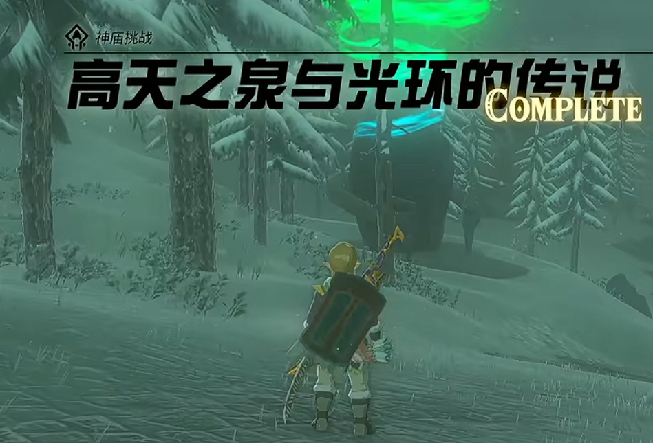
扎克斯克神庙
📍 3527, -1482, 0168
- 前往奈卓拉雪原（Naydra Snowfield）高处的泉眼旁，找到残破神庙底座，接取挑战。
- 任务要求驾驶滑翔伞依次穿越空中悬浮的所有发光圆环——利用泉眼附近的上升气流飞升后开始穿越。
- 按圆环指引的顺序逐一飞过，全部通过后神庙底座激活显现。
- 进入神庙领取祝福之光（此为上升飞行类特殊挑战神庙）。
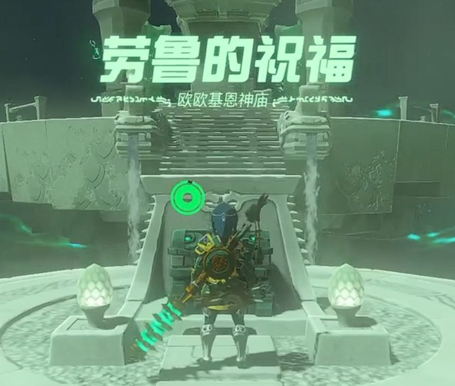
欧欧基恩神庙
📍 2918, 0509, 0155
- 在拉利斯水脉（Ralis Channel）旁的拉聂尔参道附近找到残破神庙底座，接取挑战。
- 光柱指向东侧河道中央的小岛——小岛被水流和巨石阻挡，无法直接涉水。
- 使用余料建造在岸边拼合木板或金属板搭出简易桥梁跨越水脉，抵达岛上取得水晶。
- 将水晶原路运回，放入神庙底座激活，进入领取祝福之光。
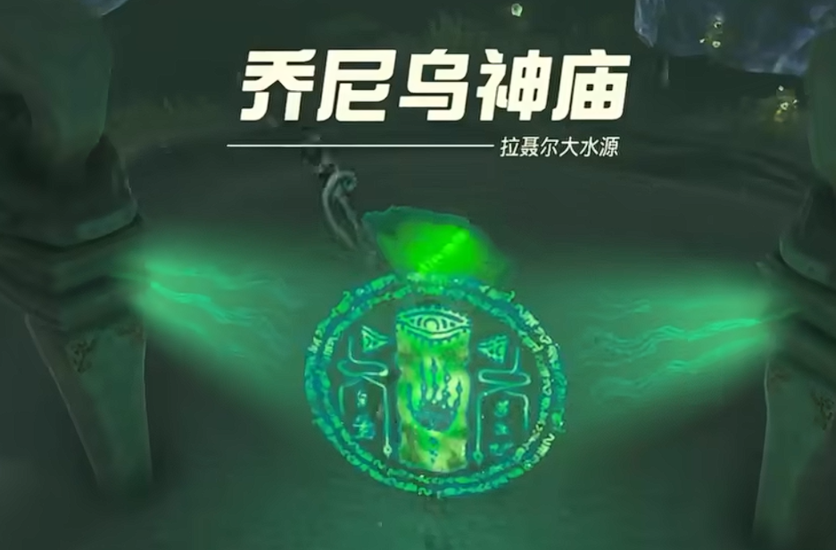
乔尼乌神庙
📍 2755, -1090, 0100
- 在拉纳鲁高地（Lanayru Heights）附近的水脉边找到残破神庙底座，接取挑战。
- 光柱指向附近的水域——水晶沉入湖底较深处，无法直接用究极手抓到。
- 潜入水中接近水晶后用究极手抓起，或使用余料建造制作带钩爪的打捞构造物从岸上将水晶拖出水面。
- 将水晶搬运至神庙底座放置激活，进入领取祝福之光。
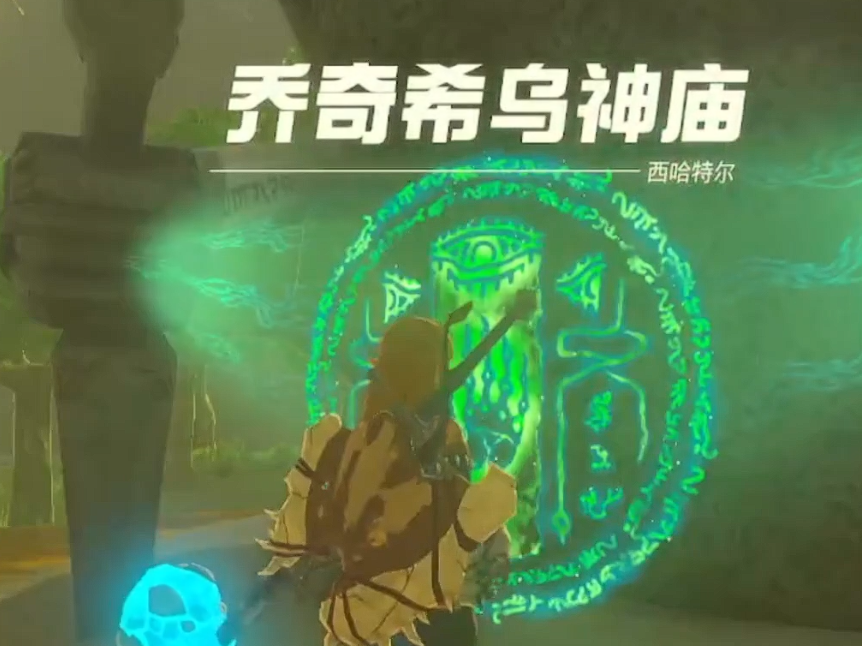
乔奇希乌神庙
📍 0931, -1902, 0030
- 在斯夸布尔河（Squabble River）附近找到残破神庙底座，底座上有一个特殊形状的凹槽锁孔。
- 任务提示"用水生成钥匙"——使用余料建造将水边的木料、树枝等拼合成与锁孔匹配的形状构造物。
- 将拼好的钥匙形木构放入神庙底座锁孔，榫合后神庙自动开启。
- 进入领取祝福之光（此为建造解谜类特殊挑战）。
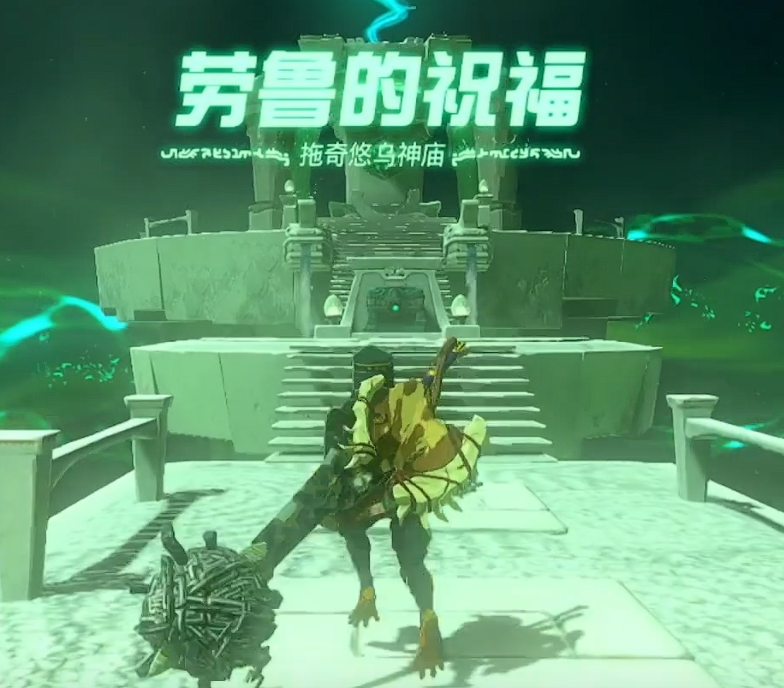
拖奇悠乌神庙
📍 2304, -2377, -0028
- 在奥克尔肚脐（Oakle's Navel）洞窟附近找到残破神庙底座，光柱指向洞窟深处。
- 进入黑暗洞窟，水晶被放置在深处的石台上，有蝙蝠妖（Keese）群守卫。
- 消灭蝙蝠妖后，用究极手抓取高台上的水晶拉下来，或攀爬高台后取得。
- 抱着水晶出洞，放入神庙底座激活，进入领取祝福之光。
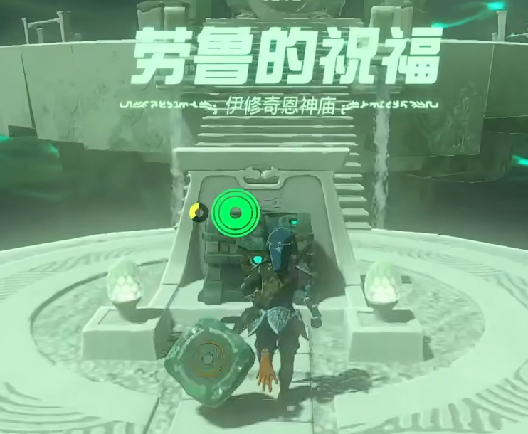
伊修奇恩神庙
📍 -0565, -3524, 0129
- 前往奥谢拉平原（Oseira Plains）南部，找到一名 NPC 马术师，与其对话接取任务。
- 任务要求驯服并骑乘体型特大的白色巨马来到神庙前——此类大马在附近平原马群中游荡。
- 使用潜行靠近大马后按 A 骑上，快速按 L 安抚至驯服，骑马前往神庙底座前触发感应。
- 神庙随即显现，进入领取祝福之光（祝福神殿）。
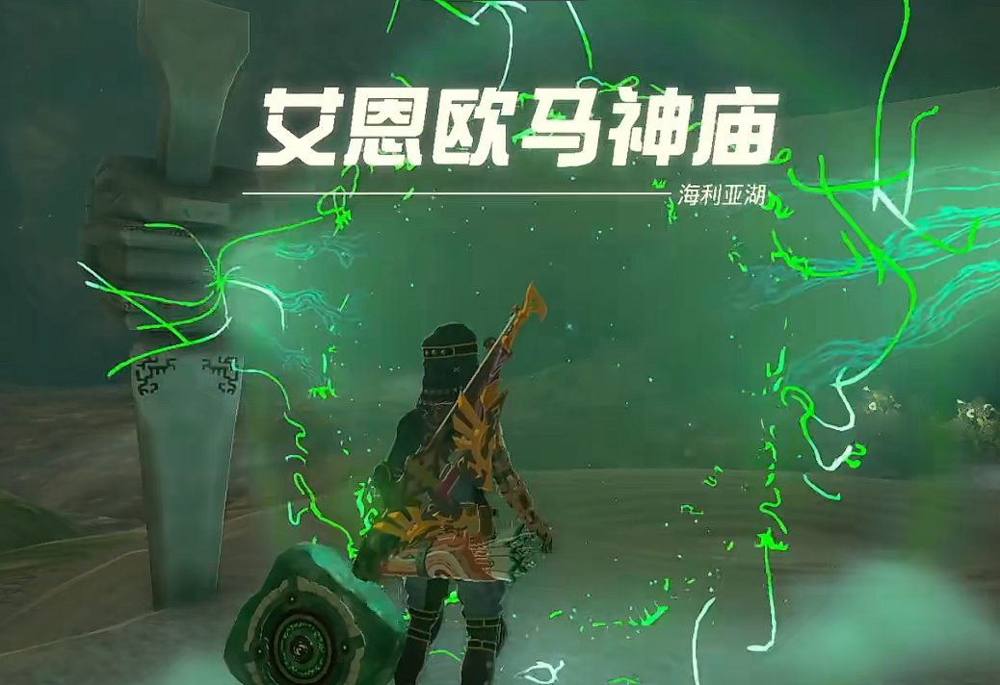
艾恩欧马神庙
📍 0104, -2517, -0087
- 在海利亚湖（Lake Hylia）西南侧岸边找到残破神庙底座，光柱指向湖底的漩涡洞窟入口。
- 潜入湖水进入海利亚湖漩涡洞窟，水晶藏在洞穴最深处。
- 注意洞内有章鱼怪（Like Like）会吞噬装备，建议先击败后再取水晶，避免损失武器。
- 取得水晶后游出洞窟，搬运至神庙底座放置激活，进入领取祝福之光。
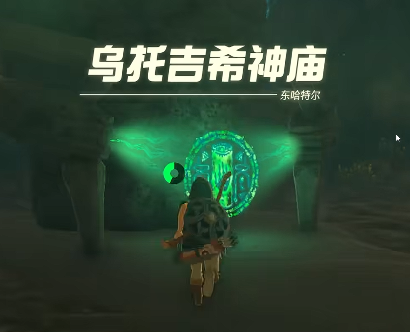
乌托吉希神庙
📍 1217, -2542, 0096
- 在托比奥空洞（Tobio's Hollow）附近找到 NPC，与其对话得知传说中将长枪投掷插入神庙底座可将其开启。
- 神庙底座中央有一个圆形插槽——手持长柄武器（如长枪、棍棒），站在远处对准底座投掷。
- 武器插入底座插槽后神庙随即显现激活。
- 进入神庙领取祝福之光（祝福神殿）。
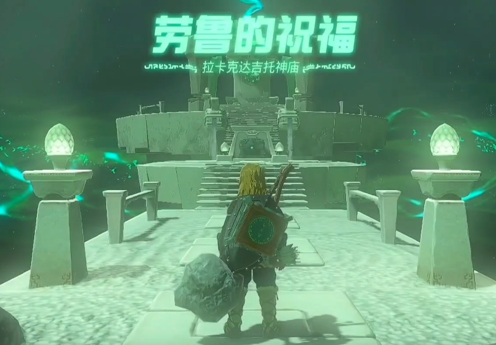
拉卡克达吉托神庙
📍 -2037, -1851, 0064
- 在库科特高原（Koukot Plateau）峡谷地带找到残破神庙底座，光柱指向峡谷深处。
- 水晶位于峡谷底部被厚厚沙石掩埋——使用究极手拨开沙石或使用爆炸物炸出水晶。
- 使用余料建造组合成带轮沙漠车辆，将水晶从峡谷运出，注意途中强风会吹偏方向。
- 将水晶放入神庙底座激活，进入领取祝福之光。
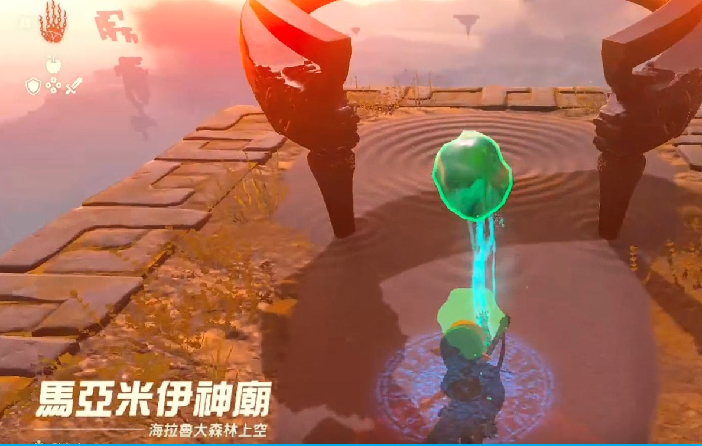
马亚米伊神庙
📍 0340, 2815, 1821
- 使用视野塔升空或借助飞龙，抵达北海拉鲁上空海拔约 1821 的北海拉鲁天空群岛。
- 在岛链中找到残破神庙底座，水晶位于相邻悬浮岛的高台上。
- 使用余料建造+飞行构造物（螺旋桨+平台）或开滑翔伞跨越岛屿间隙抵达水晶所在岛。
- 取得水晶后飞回神庙底座放置激活，进入领取祝福之光。
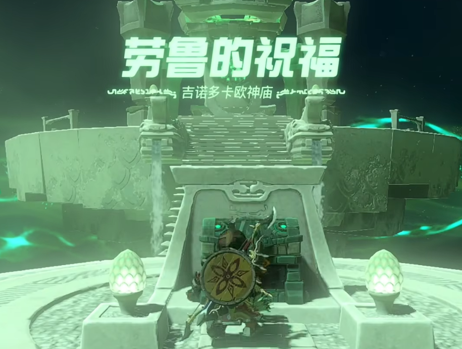
吉诺多卡欧神庙
📍 -1257, -1488, 1008
- 从海拉鲁平原视野塔向南升空，滑翔至海拔约 1008 的南海拉鲁天空群岛。
- 在岛群中找到残破神庙底座，水晶位于一系列空中跳台路线的终点处。
- 按顺序经过所有空中圆台，每踩一个圆台会短暂升空助力，最终抵达水晶位置取得。
- 携水晶飞回神庙底座放置激活，进入领取祝福之光。
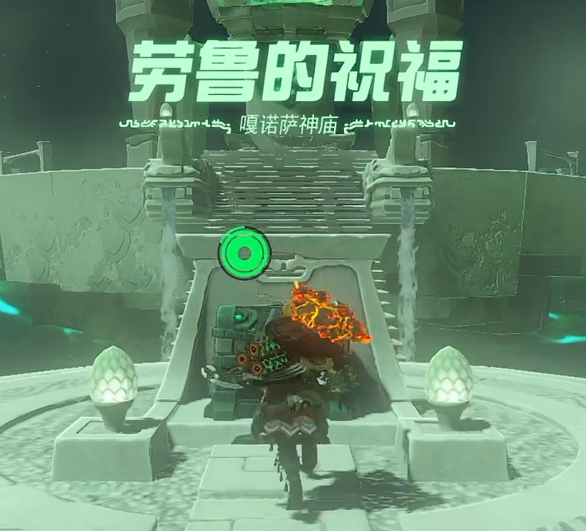
嘎诺萨神庙
📍 -3370, 0466, 1695
- 从利特荒野视野塔升空或乘气球抵达海拔约 1695 的塔邦挞天空群岛。
- 在岛群西侧找到残破神庙底座，水晶飘浮在强风区域中央——强风会不断将人和物体吹偏。
- 使用余料建造制作带两侧螺旋桨的稳定飞行台来对抗强风，将水晶抓起运回神庙。
- 将水晶放入底座激活，进入领取祝福之光。
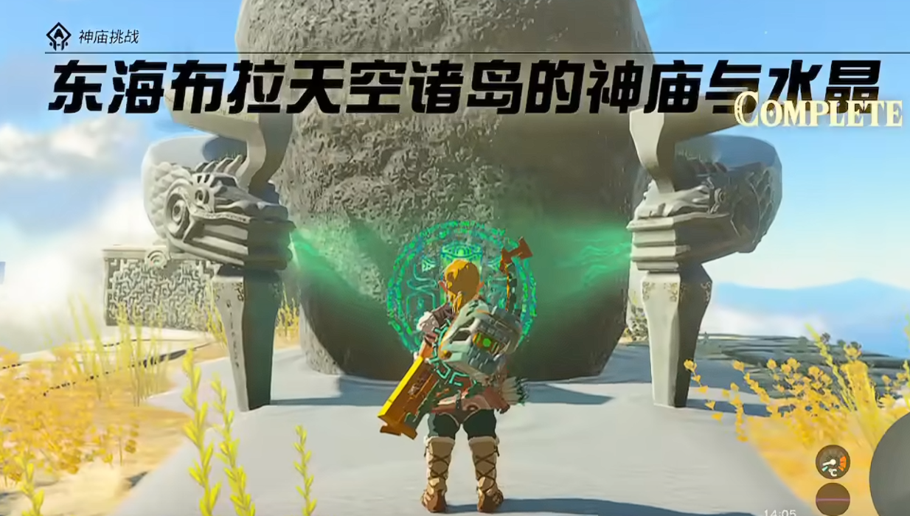
塔尼诺乌达神庙
📍 -1801, 3406, 0949
- 从皮基达石林视野塔升空向东飞行，抵达海拔约 949 的东海布拉天空群岛。
- 在冰雪覆盖的浮空岛群中找到残破神庙底座，水晶被冰封在浮空岩石上。
- 使用火焰武器或火果融化冰封水晶，再利用余料建造的桥梁或飞行构造物运送水晶至神庙。
- 将水晶放入底座激活，进入领取祝福之光。
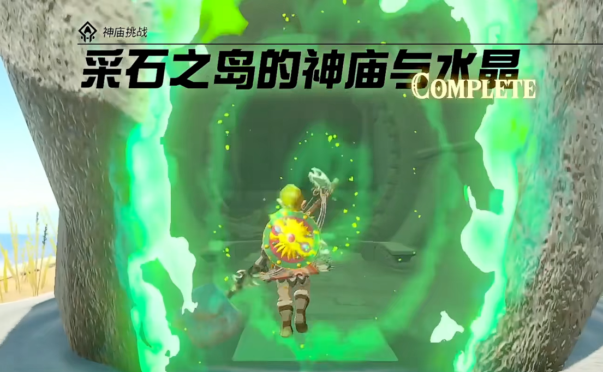
基卡克恩神庙
📍 4506, 2165, 1155
- 从阿卡莱地区视野塔升空向东北飞行，抵达海拔约 1155 的天空矿山岛（Sky Mine）。
- 在矿山岛上找到残破神庙底座，水晶被嵌入一块巨型矿石中央。
- 使用武器攻击或爆炸果击碎矿石，释放出内部的水晶。
- 取出水晶放入神庙底座激活，进入领取祝福之光。
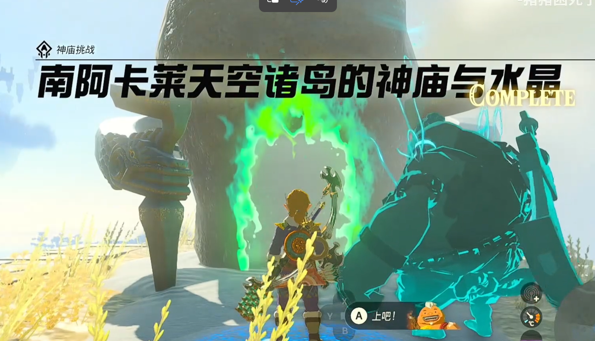
纳塔卡卡神庙
📍 3671, 1484, 1158
- 从阿卡莱高地视野塔升空，向南偏西飞行抵达海拔约 1158 的索卡拉天空群岛。
- 在群岛中找到残破神庙底座，水晶位于一处需要解锁齿轮机关的封闭平台内。
- 观察齿轮结构，使用究极手旋转连杆打开封闭通道，进入取得水晶。
- 携水晶飞回神庙底座放置激活，进入领取祝福之光。
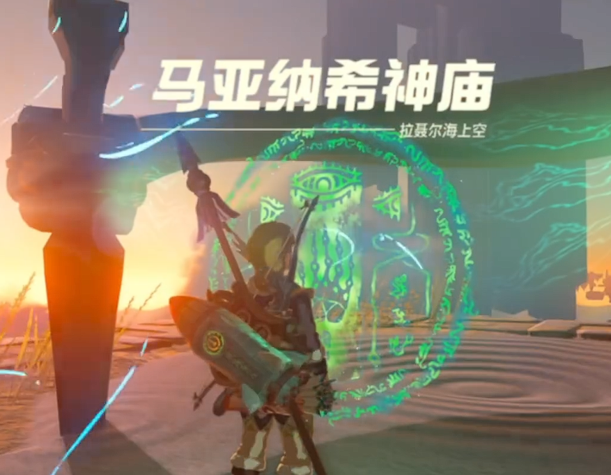
28
南拉聂尔天空诸岛的神庙与水晶
内克鲁达·天空
马亚纳希神庙
📍 2856, -2857, 1212
- 从内克鲁达东部视野塔升空，飞向海拔约 1212 的内克鲁达天空群岛。
- 水晶被置于需要连续跳岛飞行路线的终点——岛与岛之间距离较远，需精确控制滑翔轨迹。
- 利用余料建造气球构造物在低空辅助升高后滑翔，或使用龙鳞升空穿越岛间缝隙到达终点。
- 取得水晶后搭建空中运载平台带回神庙底座激活，进入领取祝福之光。
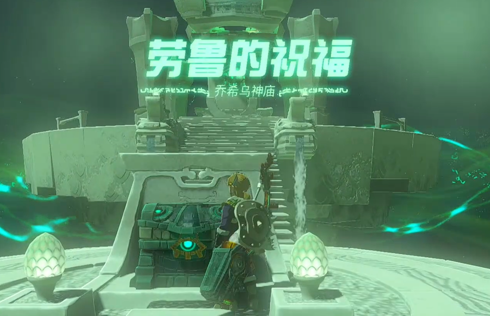
乔希乌神庙
📍 1759, -1209, 0924
- 从法隆/内克鲁达边境视野塔升空，向北飞行至海拔约 924 的北内克鲁达天空群岛。
- 在岛群北侧找到残破神庙底座，水晶分散在几块不同的悬浮石台上。
- 依次飞到各石台，用究极手收集每块水晶碎片，合并拼成完整水晶。
- 将完整水晶放入神庙底座激活，进入领取祝福之光。
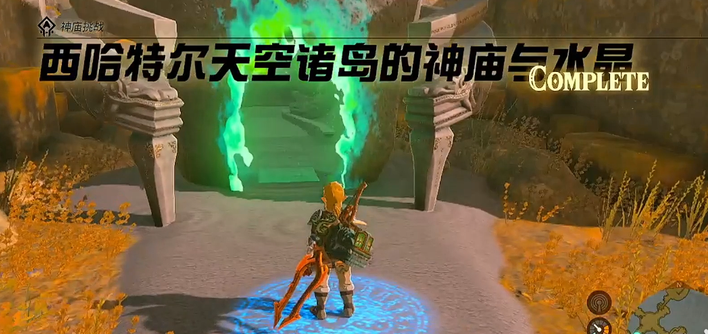
乌可欧吉希神庙
📍 1464, -2165, 0585
- 从海利亚湖东侧视野塔升空，向西北飞行至海拔约 585 的西内克鲁达低海拔天空岛群。
- 在岛群中找到残破神庙底座，水晶锁在需要依次激活压力踩踏板解锁的封闭区域。
- 按正确顺序踩踏各踩踏板（留意颜色或数字提示），解锁通道后进入取得水晶。
- 将水晶放入神庙底座激活，进入领取祝福之光。
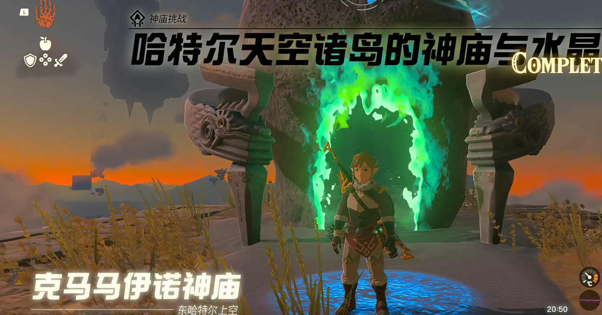
克马马伊诺神庙
📍 4613, -0947, 1790
- 这是海拔最高的天空神庙之一，位于拉纳鲁东部上空孤立高空岛（海拔约 1790）。
- 从拉纳鲁高地视野塔升空后借助上升气流或飞龙坐骑抵达此孤岛，普通滑翔伞无法直接到达。
- 岛上水晶被封在冰雪机关中——使用火焰武器融化冰封，再操控冰块方向引导水晶滚至底座区域。
- 水晶就位后神庙自动激活，进入直接领取祝福之光（祝福神殿）。
💡 神庙挑战通用技巧：
大多数水晶搬运任务中，善用究极手抱着水晶再使用通天术是穿越地形障碍的最快捷方式。天空群岛水晶任务建议优先解锁飞龙坐骑路线以便快速抵达高海拔岛屿。洞窟水晶通常有 Boss 守卫，备足攻击武器和料理药剂再进入。使用余料建造的车辆或飞行构造物可以大幅简化水晶运输难度。
🗺 坐标使用方法：游戏内按 - 打开地图，将光标悬停在任意地点，屏幕左下角即显示实时坐标 (X, Y)。按攻略中的坐标对照地图即可精准定位神庙位置。